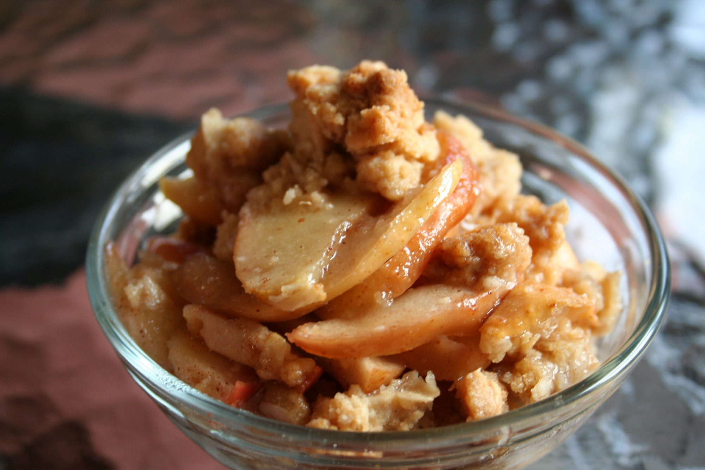

Apple Crisp II

Description
A simple dessert that's great served with ice cream.
Ingredients
- 10 cups all-purpose apples, peeled, cored and sliced
- 1 cup white sugar
- 1 tablespoon all-purpose flour
- 1 teaspoon ground cinnamon
- ½ cup water
- 1 cup quick-cooking oats
- 1 cup all-purpose flour
- 1 cup packed brown sugar
- ¼ teaspoon baking powder
- ¼ teaspoon baking soda
- ½ cup butter, melted
Description
- Preheat oven to 350 degrees F (175 degree C).
-
Place the sliced apples in a 9x13 inch pan. Mix the white sugar, 1
tablespoon flour and ground cinnamon together, and sprinkle over apples.
Pour water evenly over all.
-
Combine the oats, 1 cup flour, brown sugar, baking powder, baking soda
and melted butter together. Crumble evenly over the apple mixture.
- Bake at 350 degrees F (175 degrees C) for about 45 minutes.
Nutrition Facts
Per Serving: 316 calories; protein 2.4g; carbohydrates
60.5g; fat 8.4g; cholesterol 20.3mg; sodium 97.9mg.